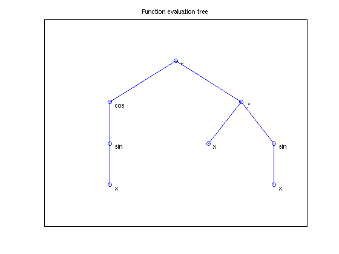

Automatic differentiation in Chebfun
Asgeir Birkisson, 16th November 2011
Contents
(Chebfun example ode/ChebfunAD.m)
The key to many capabilities of Chebfun, such as solution of nonlinear differential equations and detecting whether a given operator is linear or not is based on Chebfun's ability to compute derivatives of operators. The derivative computation is achived via automatic differentiation (AD), which differs from both traditional numerical and symbolic differentiation in that it's both accurate and fast. For a beginners introduction to AD, see [1].
In short, AD in Chebfun works by storing information about derivatives in every chebfun created. This information is stored in the .jacobian fields of chebfuns. By using the chain rule from calculus, the information is then used to accumulate partial derivatives and finally returning the derivative of one chebfun with respect to another.
As chebfuns are built up by operations on previously defined functions, an evaluation tree is created, giving the user an idea how the chain rule will eventually be used to compute the derivate. Chebfun offers the option to display the AD information, both in graphical and text form. This short example describes how Chebfun can be used to visualise how the chain rule will be used in action.
A simple example
As often in Chebfun computation, we start by creating the linear function x on our domain of interest
x = chebfun('x');
We then build up more complicated functions from that function
u = sin(x);
To look at the derivative information now stored in u, we create a new variable whose value will be the .jacobian field of u:
ujac = u.jacobian
ujac = anon diff(ujac,u) = @(F=chebfun): %<a href="matlab: edit '/home/hale/Dropbox/trunk/@chebfun/sin.m'">sin</a> diag1 = diag(cos(F)); der2 = diff(F,u); der = diag1*der2; nonConst = ~der2.iszero; | |---- diff(F,u) = empty anon
Looking at the output, we see that ujac contains a list of instructions on how to compile the derivative -- some are used for linearity detection (not of interest to us at the moment) and other for computing the derivative itself.
Most importantly, we see that that one part of the derivative involves the cosine function, and that the other part is a call to diff. This demonstrates the chain rule in action, as this corresponds to the derivative one expects to obtain when differentation the sin function in ordinary calculus. Further down the output, we see a mention to an "empty anon", this indicates the bottom of the evaluation tree, i.e. the independent variable x.
A slightly more complicated example
We know introduce a new chebfun in the mix, to see how the derivatives look as we build bigger evaluation trees
v = cos(u) + x.*u;
The derivative information of v takes up more lines than in the previous example
vjac = v.jacobian
vjac =
anon
diff(vjac,u) = @(f1=chebfun,f2=chebfun): %<a href="matlab: edit '/home/hale/Dropbox/trunk/@chebfun/plus.m'">plus</a>
[der1 nonConst1] = diff(f1,u);
[der2 nonConst2] = diff(f2,u);
der = der1 + der2;
nonConst = nonConst1 | nonConst2;
|
|---- diff(f1,u) = @(F=chebfun): %<a href="matlab: edit '/home/hale/Dropbox/trunk/@chebfun/cos.m'">cos</a>
| diag1 = diag(-sin(F));
| der2 = diff(F,u);
| der = diag1*der2;
| nonConst = ~der2.iszero;
| |
| |---- diff(F,u) = @(F=chebfun): %<a href="matlab: edit '/home/hale/Dropbox/trunk/@chebfun/sin.m'">sin</a>
| diag1 = diag(cos(F));
| der2 = diff(F,u);
| der = diag1*der2;
| nonConst = ~der2.iszero;
| |
| |---- diff(F,u) = empty anon
|
|---- diff(f2,u) = @(f=chebfun,g=chebfun): %<a href="matlab: edit '/home/hale/Dropbox/trunk/@chebfun/times.m'">times</a>
[Jfu nonConstJfu] = diff(f,u);
[Jgu nonConstJgu] = diff(g,u);
der = diag(f)*Jgu + diag(g)*Jfu;
nonConst = (nonConstJgu | nonConstJfu) | ((~all(Jfu.iszero) && ...
~all(Jgu.iszero)) & (~Jfu.iszero | ~Jgu.iszero));
|
|---- diff(f,u) = empty anon
|
|---- diff(g,u) = @(F=chebfun): %<a href="matlab: edit '/home/hale/Dropbox/trunk/@chebfun/sin.m'">sin</a>
diag1 = diag(cos(F));
der2 = diff(F,u);
der = diag1*der2;
nonConst = ~der2.iszero;
|
|---- diff(F,u) = empty anon
It is easy to imagine the tree getting very large for more involved computation. Hence, we introduce the plot method for AD information which plots the tree in a graphical way:
plot(vjac)
The tree in the figure shows how the final chebfun v is composed by performing various operations on the chebfun we started with, x. Note that by clicking on the nodes of the tree, the AD information shown before is displayed.
A nice evaluation tree
Finally, we create the complicated chebfun f via
f = exp(x.^2) + cos(x).*log(2+x) + diff(tanh(x.*u));
Here, printing the AD information to the console would be difficult to grasp, but we get a nice tree if we plot it graphically:
plot(f.jacobian)

References: [1] http://en.wikipedia.org/wiki/Automatic_differentiation.